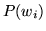
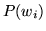

n-gram language models
Language models estimate the probability of a word sequence,
 - that is, they evaluate  as defined in equation
1.3 in chapter 1.14.1
- that is, they evaluate  as defined in equation
1.3 in chapter 1.14.1
The probability
can be decomposed as a
product of conditional probabilities:
Subsections
Back to HTK site
See front page for HTK Authors